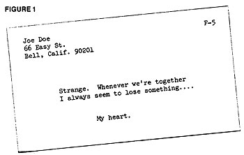
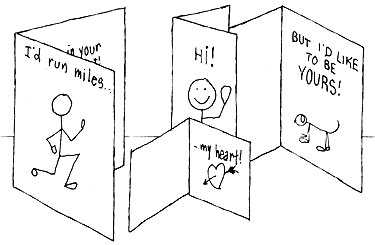

Ever wonder who writes the messages that appear in greeting cards? Well, Carol Eannarino? a freelance writer from New York City-is here to tell you how . . .
Step inside a drugstore or gift shop and take a look at all the greeting cards. Obviously, there's money in the card business . . . and whoever writes the verses and gags that appear on these preprinted missives must be getting a piece of the action. But who are those people? And how did they "break into" card-writing?
Well, as I've long since learned, most greeting card publishers rely on freelancers to supply most of their ideas . . . and the only qualifications needed to become one of those freelancers are [1] imagination and [2] a sense of humor. When I found out how good the pay was, I immediately decided that I met both requirements. Quite possibly you do, too.
Please let me qualify that statement about the "good pay" just a bit. I don't know anyone who's become rich-or even comfortably well-to-do?as a freelance greeting card writer. (The money's not that good.) Still, the constant flurry of $10, $15, and $25 checks you're likely to receive as a part-time card poet can pay the rent (and then some), if you're able to churn out fresh ideas regularly.
The best money is in studios (those long, slim cards that pack a humorous hello). Originally, the studios were aimed at a somewhat sophisticated audience, meaning that quite often the greetings were rather risque. Nowadays, only a few companies actually solicit bawdy gags . . . the rest?if they use such material at all?want it to be subtle and "in good taste".
There are studio cards for all occasions: birthdays, friendship (almost anything goes here), get well, anniversary, holiday greetings, etc. Some publishers read seasonal (holiday) ideas year round . . . others have a definite schedule. You can write to the various companies to learn their requirements (see the sidebar that accompanies this article).
Although most card firms pay around $25 for a studio idea, the rate of remuneration varies. Really big outfits-like Hallmark?can afford to (and do) fork over $50 or more, while smaller companies pay as low as $10.
Another type of greeting?similar to the studio, but a bit smaller in size and more overt in its humor?is the humorous card. (Note: There's also a cute card, which is softer and more feminine in its approach than either the studio or the humorous.) Sometimes, an editor at a large company may decide that your studio idea would be better as a humorous, in which case you'll probably be paid less. Frankly, I don't care how my ideas are classified as long as the checks keep rolling in.
Then there are the sentimental cards (you know, those syrupy?sweet things your grandmother sends on your birthday). Here, editors are looking for four-, six-, or eight-liners with rhyme and meter . . . and the end result must be believable. (There are people who?whether they believe their rhymes or not?simply can't write this kind of card, try as they may. I happen to belong to that group myself.)
The pay for sentimental verse is not so good . . . about $1.00 per line. But again, it varies.
If you think you'd like to try your hand at this unique craft, start by studying the cards at your local drugstore or gift shop. These cards are your competition . . . so learn all you can from them.
You'll notice that the most effective cards?regardless of what category they fall into?have a strong "me to you" or "us to you" message. (This is partly because many people?myself included-use greeting cards as substitutes for letters.) You should strive, then, to give your ideas what card publishers like to call sendability . If your gags (or verses) lack this quality, editors won't buy them no matter how funny (or sentimental) they are.
Along the same lines, try to avoid the "direct slam" type of greeting, in which the card's recipient is made the butt of the joke. The majority of card buyers are female and are likely to be turned off by insults (and other similarly aggressive ideas). Keep your jabs gentle and good-natured.
Bear in mind, too, that many cards are sent by couples. Try to avoid the I-me-my pronouns, if possible, and focus on the card's intended receiver (the "you" in your messages).
Above all, remember that greeting card editors are experts in their field. Nothing will turn them off faster than hackneyed, stale ideas. (Forget the "knock-knock . . . who's there?" gags.) And don't try "lifting" lines from one company's cards and selling them to another firm. These men and women read hundreds?perhaps thousands?of ideas every week, and can spot a "steal" a mile off.
All an editor really wants is a fresh, funny gag with a surprising punch line and a definite "me to you" feel. That's what today's greeting cards are all about.
In this business, as in any other, professionalism counts, and here's how to prepare your submissions as a pro would:
Most editors prefer that you type your ideas on 3 X 5 file cards, with your name and address?and a code number for each idea?on the front of the card. A sample studio submission is shown in Fig. 1.
For ideas that require artwork, you'll need to submit dummies. To make a dummy, all you have to do is [1] fold a long, stiff piece of paper over once to resemble a studio card, [2] type or print the gag lines on the front and the inside, [3] draw sketches as appropriate (you don't have to be a Chagall . . . stick figures will do), and [4] put your name and address-and a code number?on the back of the card. The card company's art department will take it from there.
Send your cards and/or dummies in batches of 10 to 15, and always include a self-addressed, stamped envelope (SASE). Don't bother with a cover letter, because there's nothing you can say.
And do be sure to keep accurate records of when and where you've sent each of your ideas. You may want to do this by making duplicates of all your 3 X 5 cards and writing the relevant routing information on the back of each one. I prefer to retype the gags from each outgoing batch onto a single sheet of paper along with their code numbers, the name of the company to which the batch was sent, and the date of mailing. (I keep a running tally of the code numbers I've used on a separate file card.)
Once you send out your first batch of ideas, you'll see how simple all this is . . . and you just may get hooked on greeting card writing for good!
OK. You've come up with a raucously funny batch of studio ideas that you're sure will sell. So?with visions of ten-dollar checks dancing in your head?you send the gags off . . . only to receive the whole lot back a week or so later. (Greeting card editors are usually very prompt.) With them, there may be a form letter explaining "with regret" that your cards have no place in the company's current line. Then again, there may be no explanation at all.
Don't despair. Everybody gets rejections in this business . . . bushel baskets of 'em. What you should do is reread your ideas and try to examine them objectively. Can they be improved in some way? If so, sit down and revise the gags. Otherwise?if they still sound good to you?immediately send the ideas to another company. And if that company rejects them, keep on making the rounds. (After all, one editor's idea of humor may differ from another's.)
Sometimes an editor will reject your gags or verses for reasons that have nothing to do with their merit. If you're lucky, the editor will?in such a case?scribble a note to that effect on your rejection slip (it's been known to happen). He/she may tell you for example?that the company is overstocked with birthday and friendship ideas at this time, but is short on get?well material. That's what's known as encouragement. If you don't follow up on it?and quickly?you're making a big mistake!
Once you get the greeting card bug, you'll begin to see potential card ideas everywhere you look. So be sure to have a pad and pencil handy at all times . . . especially bedtime. (The best ideas always seem to come just as I'm starting to doze off!) With a little practice, you'll soon be able to conjure up dozens of gags and verses per week, while you're doing ordinary household or other chores.
Who knows? Someday you may be able to use those checks from Amberley, Barker, Hallmark, Happy Thoughts, and all the rest to pay the rent (or pay off the mortgage on a small farm). Anything', possible in the greeting card business!
No freelance greeting card writer should be without a copy of the latest edition of Writer's Market, published annually by the staff of Writer's Digest. One chapter of this mammoth reference book is devoted to greeting card markets and contains the names, addresses, editorial requirements, and rates of payment of over two dozen companies in this field. You can purchase Writer's Market for $13.50 (plus shipping) from Mother's Bookshelf, or direct from Writer's Digest at 9933 Alliance Rd., Cincinnati, Ohio 45242. (Or you can go to the library and make Xerox copies of the book's relevant pages.)
If you're unable to find Writer's Market, send 50 cents?and a self?addressed, stamped envelope?to The National Association of Greeting Card Publishers, 170 Mason St., Greenwich, Conn. 06830, and ask for a copy of their freelance market list.
Also, since editors frequently change jobs or revise their requirements, it pays to keep in touch with the individual greeting card companies. Many of these firms publish a monthly listing of requirements, and those that don't will more than likely be happy to tell you their current needs. (Again, though, don't forget to enclose a SASE.)
Finally, you'll occasionally find market news and, sometimes, articles on the craft of greeting card writing?in the monthly news-stand magazines, The Writer and Writer's Digest-Carol Eannarino.
|
 Here's how a finished studio submission should look. Note that the card has been coded F-5: ""friendship card number five"". The next friendship idea will get the code F-6, the one after that F-7, and so on ad infinitum. |
 |
|